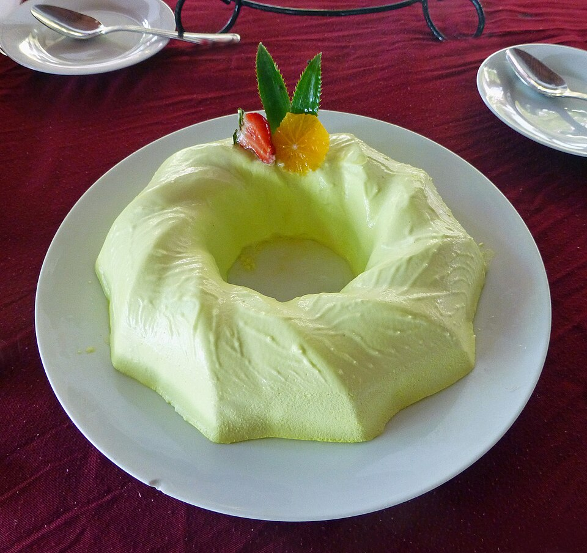

Doces · Musses
Musse limonada

Ingredientes
- 1 caixa de gelatina em pó sabor limão
- ½ xícara (chá) de água quente
- ½ xícara (chá) de suco de limão
- 1 xícara (chá) de gelo picado
- 2 claras
- 2 colheres (sopa) de açúcar
- Raspas da casca de 1 limão
Modo de preparo
- Bata a gelatina dissolvida na água, o suco e o gelo no liquidificador.
- Bata as claras em neve com o açúcar até suspiro, misture ao creme, acrescente as raspas, distribua em taças e gele 4 horas.
Observação
Para testar a neve: a clara não deve cair da colher virada.